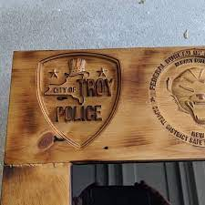
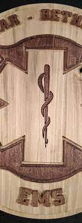
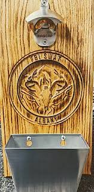

Custom Gift For FBI An Customer
This is a retirement gift for a customer in the Bureau. It can be replicated or changed based on your desires.

Custom Gift For Troy PD
Another retirement gift for a friend in the Troy P.D., Everything from the police department to the type of wood is customizable with this piece.
FBI Gift
Another gift for a customer in the Bureau, This piture was printed on a metal slate and the colors are very vibrant. Also fully customizable with your choice of picture.
FBI Swat Gift
A gift made for a customer from the Bureau in Chicago, This design can be replicated or used to make a new design. This custom cut was also polished by the customer, but it can also be finished before shipping

Retirement Emergency Services Gift
A retirement gift made for a friend work in Emergency Services. This can also be replicated or used to make a new project.

FBI Shelf
This design was made and can be replicated to any extent. It could be any Police Department or Millitary Branch